Pyridine Electrophilic substitutions
Pyridine is an aromatic compound, but the replacement of CH by more electronegative N induces a dipole moment of 2.2 D denoting a shift of electron density from the ring towards the nitrogen atom (benzene which is symmetrical, has not dipole moment). The resonance description indicates that nitrogen atom of pyridine carries a partial negative charge and the carbon 2 and 4 bear partial positive charges
Pyridine is less reactive that benzene towards electrophilic substitution because:
Higher electronegativity of N lowers the electron density around C atoms;
Electrophilic can coordinate with N to form resonance stabilized pyridinium salts: the N atom of pyridine carries a lone pair of electron which are NOT part of the π system. As a result pyridine is a base (pKa 5.2), reacting with acids, Lewis acids and eletrophiles E+ to form stable pyridinium salts, in which the hetero-cycle retains aromatic character

From the resonance description you might think that although the primary site for electrophilic attack is at N-1, reactions at C-3(5) might be possible, even if not as likely. Direct attact at a ring carbon- even C-3 is normally slow because
the concentration of free pyridine in equilibrium with the pyridinium salt is extremely low;
attack upone the salt would also require the positive pyridinium cation to bond to a positively charged reactant.